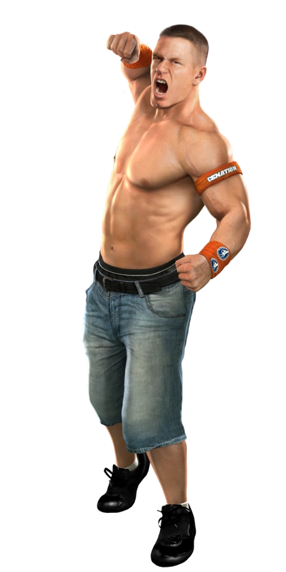
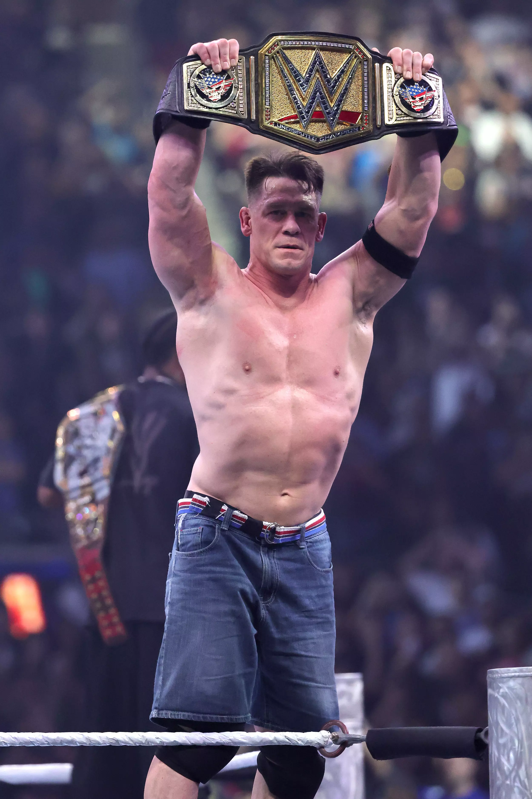
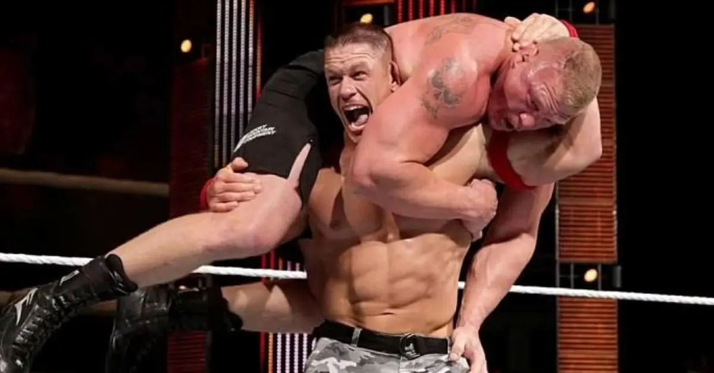
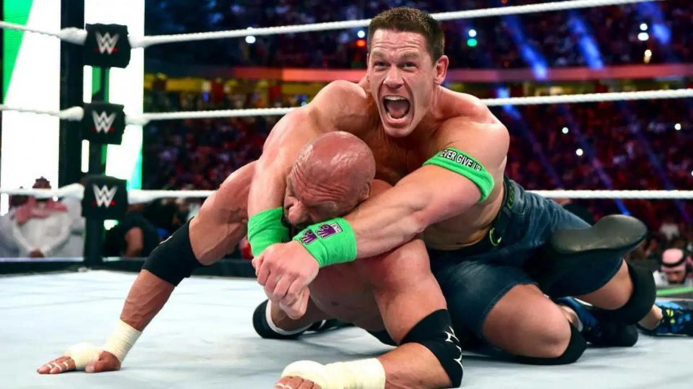

Introduction
-

- Born: April 23, 1977, in West Newbury, Massachusetts Born: April 23, 1977, in West Newbury, Massachusetts Born: April 23, 1977, in West Newbury, Massachusetts Born: April 23, 1977, in West Newbury, Massachusetts
- Profession: Professional wrestler, actor, television presenter, and rapper Profession: Professional wrestler, actor, television presenter, and rapper Profession: Professional wrestler, actor, television presenter, and rapper
- Featured in movies like Fast & Furious 9, Bumblebee, The Suicide Squad
- Known for strength, charisma, and never-give-up attitude
- Famous for his catchphrase “You Can’t See Me” Famous for his catchphrase “You Can’t See Me” Famous for his catchphrase “You Can’t See Me”
- 16-time WWE World Champion 16-time WWE World Champion 16-time WWE World Champion16-time WWE World Champion16-time WWE World Champion
- Starred in the DC series Peacemaker Starred in the DC series Peacemaker Starred in the DC series PeacemakerStarred in the DC series PeacemakerStarred in the DC series Peacemaker
- Holds the record for granting 650+ wishes with the Make-A-Wish Foundation Holds the record for granting 650+ wishes with the Make-A-Wish FoundationHolds the record for granting 650+ wishes with the Make-A-Wish FoundationHolds the record for granting 650+ wishes with the Make-A-Wish Foundation
- Role Model: Dedicated to fitness, hard work, and positivity
John Felix Anthony Cena, popularly known as John Cena, is an American professional wrestler, actor, television presenter, and rapper who has become a global icon of entertainment and inspiration. Born on April 23, 1977, in West Newbury, Massachusetts, Cena first gained fame through World Wrestling Entertainment (WWE), where he went on to become a 16-time world champion. Known for his incredible strength, charisma, and his famous catchphrase “You Can’t See Me,” he quickly rose to the top and earned a place among the greatest superstars in wrestling history. His never-give-up attitude and connection with fans helped him stand out, making him one of the most loved and respected athletes of his generation. Beyond wrestling, Cena successfully transitioned into Hollywood, acting in blockbuster movies such as Fast & Furious 9, Bumblebee, The Suicide Squad, and the popular DC series Peacemaker, where his performance was widely appreciated
John Cena - Achievements
John Cena has made a remarkable impact in wrestling, Hollywood, and philanthropy. His journey is filled with numerous records and contributions that highlight his hard work, determination, and inspiring personality. Below are some of his most notable achievements: John Cena has made a remarkable impact in wrestling, Hollywood, and philanthropy. His journey is filled with numerous records and contributions that highlight his hard work, determination, and inspiring personality. Below are some of his most notable achievements:
- 16-time WWE World Champion – Tied with Ric Flair for the most recognized world title reigns in WWE history.
- 5-time United States Champion – Revitalized the title with his open challenge matches.
- 4-time Tag Team Champion – Won with partners like Shawn Michaels, Batista, and The Miz.
- 2-time Royal Rumble Winner – Secured victories in 2008 and 2013.
- Hollywood Actor – Featured in blockbuster movies like Fast & Furious 9, Bumblebee, and The Suicide Squad.
- Peacemaker Star – Played the lead role in the popular DC series, gaining worldwide appreciation.
- Record with Make-A-Wish – Granted over 650 wishes, the highest by any celebrity.
- Rap Album “You Can’t See Me” – Debut album reached No. 15 on the Billboard 200 chart.
- Humanitarian Work – Recognized globally for his charity, discipline, and inspirational speeches.
- Record with Make-A-Wish – Granted over 650 wishes, the highest by any celebrity.
- Rap Album “You Can’t See Me” – Debut album reached No. 15 on the Billboard 200 chart.
- Humanitarian Work – Recognized globally for his charity, discipline, and inspirational speeches.
John Cena - Championship Titles
- 16-time World Champion – 13-time WWE Champion and 3-time World Heavyweight Champion.
- 5-time United States Champion – Known for his memorable Open Challenge matches.
- 4-time Tag Team Champion – Won alongside legends like Shawn Michaels, Batista, The Miz, and David Otunga.
- 2-time Royal Rumble Winner – Victorious in 2008 and 2013.
- 2012 Money in the Bank Winner – First Superstar to unsuccessfully cash in the briefcase.
- WWE Slammy Awards – Multiple-time winner including "Superstar of the Year".
- 2-time Royal Rumble Winner – Victorious in 2008 and 2013.
- 2012 Money in the Bank Winner – First Superstar to unsuccessfully cash in the briefcase.
- WWE Slammy Awards – Multiple-time winner including "Superstar of the Year".
John Cena is one of the most decorated WWE Superstars of all time. His championship victories have made him a global icon in the wrestling industry. Below is a list of his major titles and champ John Cena is one of the most decorated WWE Superstars of all time. His championship victories have made him a global icon in the wrestling industry. Below is a list of his major titles and champi John Cena is one of the most decorated WWE Superstars of all time. His championship victories have made him a global icon in the wrestling industry. Below is a list of his major titles and champiionship accomplishments:
🥊 John Cena – Signature Moves
-

-
Attitude Adjustment (AA)
This is Cena’s most famous finishing move, where he lifts his opponent onto his shoulders and slams them down with force. It has secured him countless victories in his WWE career. This is Cena’s most famous finishing move, where he lifts his opponent onto his shoulders and slams them down with force. It has secured him countless victories in his WWE career.

-
STF (Stepover Toehold Facelock)
A powerful submission move where Cena locks the opponent’s legs and pulls back their head, forcing them to tap out or endure immense pain. This move has won him several championship matches. A powerful submission move where Cena locks the opponent’s legs and pulls back their head, forcing them to tap out or endure immense pain. This move has won him. A powerful submission move where Cena locks the opponent’s legs and pulls back their head, forcing them to tap out or endure immense pain. This move has won him/
-
Five Knuckle Shuffle

Cena taunts his opponent by waving his hand in front of their face before delivering a strong fist drop. The crowd usually chants along when he performs this move. Cena taunts his opponent by waving his hand in front of their face before delivering a strong fist drop. The crowd usually chants Cena taunts his opponent by waving his hand in front of their face before delivering a strong fist drop. The crowd usually chants
-
Shoulder Blocks

Cena uses his explosive power to knock down opponents with consecutive shoulder tackles, often shifting the momentum of the match. Cena uses his explosive power to knock down opponents with consecutive shoulder tackles, often shifting the momentum of the match Cena uses his explosive power to knock down opponents with consecutive shoulder tackles, often shifting the momentum of the match
-
Spinning Side Slam

A setup move where Cena grabs his opponent and slams them sideways onto the mat, usually before hitting the Five Knuckle Shuffle. A setup move where Cena grabs his opponent and slams them sideways onto the mat, usually before hitting the Five Knuckle Shuffl A setup move where Cena grabs his opponent and slams them sideways onto the mat, usually before hitting the Five Knuckle Shuffl